Дефект и тесткейс
QA и QC
Что обычно делает тестировщик?
Тестирование - работа продукта соответствует требованиям
А если не соответствует - то это дефект
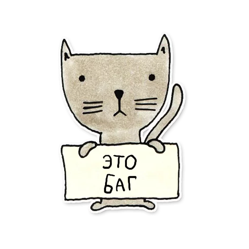BUG как ошибка
1947
или 1945?
или 1878?
Какие бывают ошибки:
функциональные
ошибки верстки
интеграционные
Алгоритм действий при обнаружении ошибки
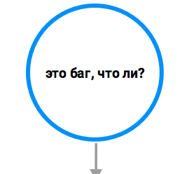Алгоритм действий при обнаружении ошибки
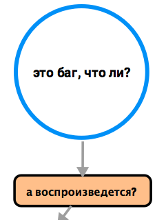Алгоритм действий при обнаружении ошибки
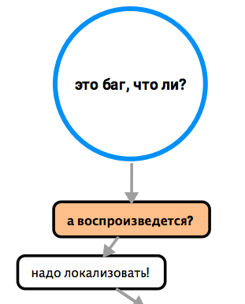Алгоритм действий при обнаружении ошибки
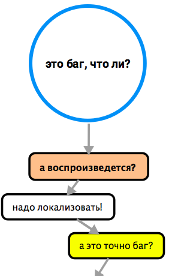Алгоритм действий при обнаружении ошибки
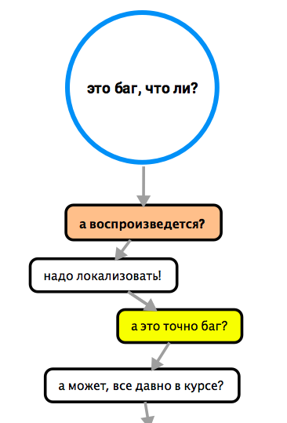Алгоритм действий при обнаружении ошибки 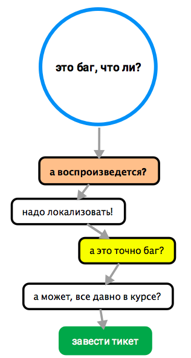
Пример из жизни про ₽
Пример из жизни про ₽
- Обнаружила баг
- Воспроизвела
- Локализовала
- Спросила себя: А это точно баг?
- Поискала похожее в Трекере и поспрашивала коллег
- Завела тикет
Давайте вместе придумаем название тикету
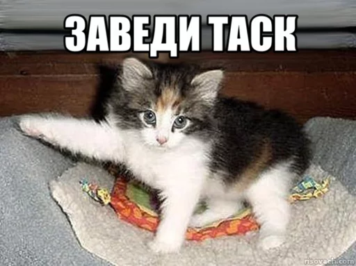WWW
WHAT
WHERE
WHEN

Название тикета
Что? Где? Когда?
Что: Слетают эксперименты
Где: В отложенных
Когда: При смене типа выдачи
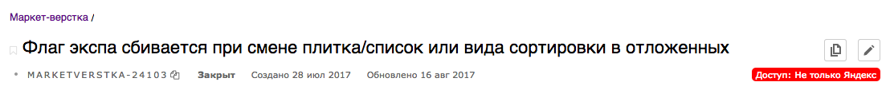Плохие названия для тикета
Ошибка в Корзине
Страница не найдена
Нет сообщения об ошибке
Ошибка в Корзине
Страница не найдена
Нет сообщения об ошибке
Хорошие названия для тикета
Что? Где? Когда?
- Придумать названия для случаев:
ке.12.2018
4*3=1
соц.сеть легла
Описание бага
Описание тикета должно быть понятно даже бабушке
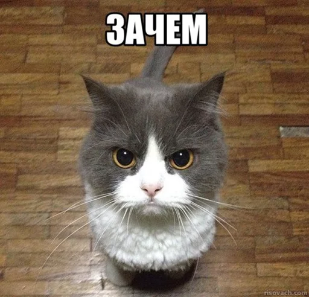Кто будет читать тикет?
Разработчик
Менеджер
Аналитик
Другой тестировщик
и даже может быть ваш руководитель
Вывод?
Описание тикета
- Что сделали?
- Что случилось?
- А как должно быть?
Описание тикета
- Алгоритм действий (как воспроизвести)
- Реальный результат
- Ожидаемый результат
это важно!
Описание тикета должно быть понятно всем в команде, иначе
В описание тикета лучше добавить
- Браузер
- Операционная система
- Особенности в проекте
Когда имеет смысл указывать браузер и ОС?
Пример тикета с заполненными полями
Жизненный цикл тикета с домашними заданиями
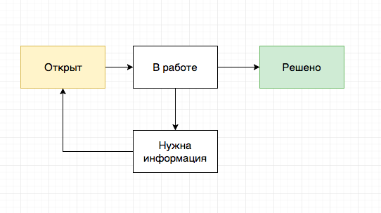Жизненный цикл тикета
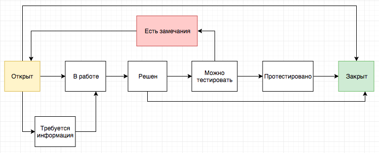Нюансы
- Не получается стабильно воспроизвести
- Неясен ожидаемый результат
- И еще про ожидаемый результат 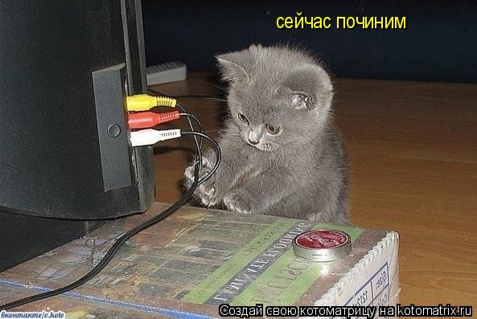
Хорошо сформулированный вопрос — уже половина ответа!
Тесткейс
testcase
ТК - отдельный тест, предназначенный для проверки определённого свойства тестируемой системы.
Что такое ТК?
Поля ТК
- ID
- Название
- Предусловия
- Шаги
- Ожидаемый результат
Позитивные и негативные ТК
ТК на продукт
Тест-сьют (тест комплект, тестовый набор)
- это комбинация ТК для проверки определенной части ПО, объединенной общей функциональностью или целями, преследуемыми запуском данного набора.
Требования к атомарности ТК
зависят от команды
Инструменты для работы с ТК
зависят от команды
работа с ТК
- Составление
- Прогон
Зачем нужны ТК?
Проверка продукта без ознакомления со всей документацией
Когда используются ТК?
- Регрессионное тестирование
- Тестирование новой функциональности
- Редизайн продукта
- Разработка продукта под новую платформу (десктоп -> мобильное)
- Автотесты
Результат выполнения
- Положительный
- Отрицательный
- Выполнение ТК блокировано
Положительный Результат
PASSED
отрицательный Результат
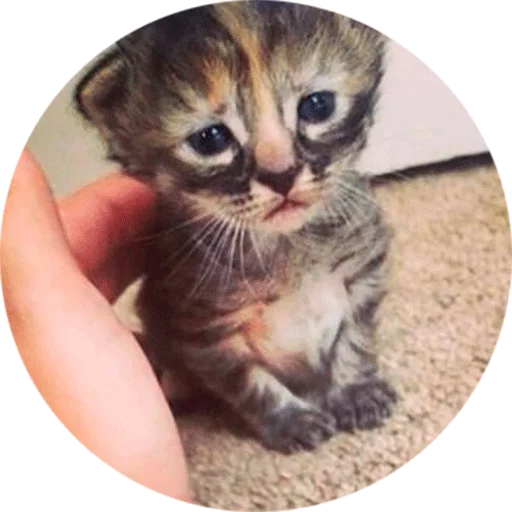
FAILED
выполнение тк блокировано
BROKEN
Изолированность
НЕ изолированность - плохо
аналогично, предыдущий, так же, выше,...плохие слова для ТК
конкретные формулировки
«Поведение соответствует ожидаемому» - очень плохая формулировка!
очень плохая формулировка!
ОЧЕНЬ! ПЛОХАЯ! ФОРМУЛИРОВКА!
Ожидания у всех разные
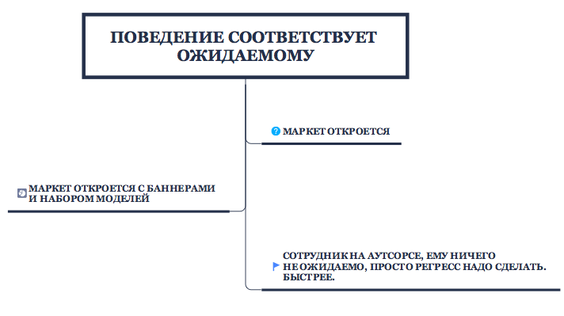Прогнать ТК должен смочь любой из команды
он тоже хочет понимать
Упражнение
Цель: проверить замену руб на знак рубля в отложенных при смене типа выдачи
ps: учитывая, что функциональность уже в проде
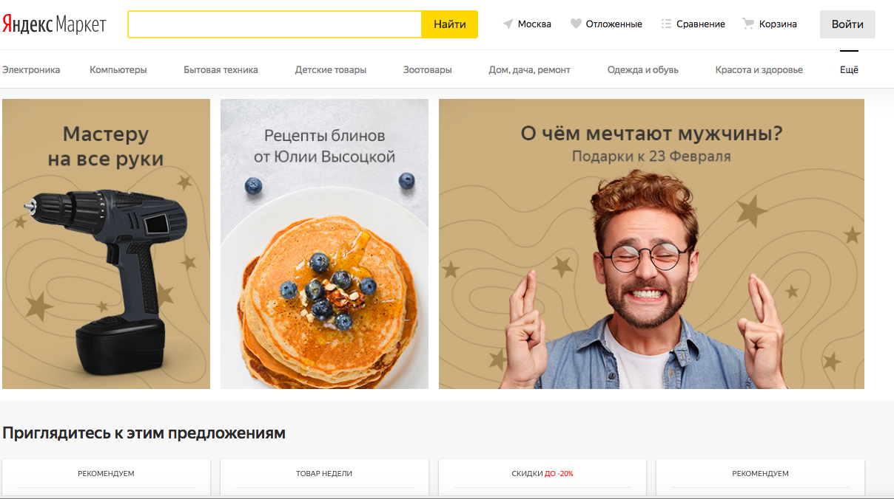Нам нужно придумать
- ID
- Название
- Предусловия
- Шаги
- Ожидаемый результат
| Поле | Значение |
|---|---|
| ID | OT1 |
| Название | Замена "руб" на ₽ в Отложенных (грид) |
| Предусловия | 1. зайти на Маркет, 2. залогиниться, 3. добавить три модели в отложенные |
| Шаги | 1. Перейти в отложенные 2. Сменить типа выдачи на грид |
| Ожидаемый результат | Все "руб" заменены на ₽ |
Учитывая замечания и атомарность ТК
Нюансы
- PostConditions - правила хорошего тона
- Кодовое название 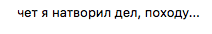
нельзя прогонять ТК на рабочей базе
Лекция: Дефект и ТК
ТК — проверка определенного свойства продукта.
Если при прогоне ТК отрицательный результат - то это дефект.
На дефекты заводят тикеты.
Литература
Домашняя работа
5 позитивных ТК
1 негативный ТК
Спасибо за внимание!
Вопросы?